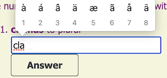

VIII. Place Whence and Place Whither
This list contains a mixture of Conjugations I and II, with verbs that indicate motion. There is also a verb that looks at first like a rerun from Lesson III...until you see its infinitive.
| 1st Singular (I verb) | Infinitive (to verb) | Basic Meaning |
| equitō | equitāre | ride a horse |
| moveō | movēre | move |
| natō | natāre | swim |
| nāvigō | nāvigāre | sail |
| saltō | saltāre | leap, dance |
| volō | volāre | fly |
Here are a few nouns referring to places toward which or or away from which one can go:
| Singular | Plural | Gender | English |
| aqua | aquae | f. | water |
| culīna | culīnae | f. | kitchen |
| fundus | fundī | m. | farm, estate, bottomland |
| mūrus | mūrī | m. | wall |
| taberna | tabernae | f. | shop, tavern, inn |
| vīcus | vīcī | m. | village |
Now we will add two prepositions to triple the number of prepositions learned thus far. These two, which are basically antonyms, are good to introduce together.
| Latin | English |
| ā, ab (+ Ablative) | from, away from |
| ad (+Accusative) | to, toward, for the purpose of |
Vocabulary Notes
Verbs: First, the proverbial elephās in the room: volō-volāre vs. volō-velle. English-speakers know that English has hundreds of words with vastly different meanings and identical spellings— words such as fly, plane, and plain just for starters. Latin has some words like that as well, but considerably fewer than English. Be that as it may, Volō volāre is a complete sentence in Latin.
All the verbs in the list are verbs of motion, like eō-īre and ambulō-ambulāre. In this lesson, we will learn how to ride, move, swim, sail, leap, or fly to places other than Rōmam.
Moveō-movēre can be both transitive and intransitive, just as in English. One can move (oneself) in a certain direction or move something that way.
Nouns: The basic meaning of taberna is a stall in the fōrum or marketplace. Tabernae come in a variety of sizes, selling nearly everything that one could sell, including refreshments like a cup of wine (vīnum).
The noun mūrus refers to the walls of an individual building and the walls built around a town or city to protect it from invaders.
Ablative Case—Place from Which
The ab- in Ablative is a prefix that means away or away from in both Latin and English. The preposition ā/ab always takes objects in the Ablative case; it also serves as a prefix meaning away, as found in the word ablative.
Generally, Latin puts ab before nouns or adjectives beginning with a vowel or h, ā before objects beginning with any other consonant. There is nothing wrong with using ab before all objects, but an ancient Roman might giggle at it.
Ā fundō nāvigāmus. = We are sailing away from the farm.
Ab aquā movent. = They are moving away from the water.
We will introduce other prepositions that indicate place from which in a later lesson.
Accusative Case—Place to Which
Unlike in, the preposition ad takes objects exclusively in the Accusative case. In fact, the ac- in accusative is a modified form of ad, similar to the prefix in adōrō.
Objects of ad perform the function of place to which, one of the uses of the Accusative case. The same is true of in when it means into, onto, or against (as with a legal case).
Ad campōs equitāmus. = We ride to(ward) the (battle)fields.
Virī in culīnam movent. = The men are moving into the kitchen.
Compare that second example with the sentence Virī in culīnā movent. One letter makes the difference between in and into the kitchen. With the Ablative of place where, the men start the sentence already in the kitchen and remain there; with Accusative, they start the sentence outside the kitchen and end up in it.
NOTE: In the present tense, the appearance of ad does not guarantee that those who move make it all the way to the Accusative destination. It merely means that there is motion in progress toward or in the direction of that destination.
We will introduce other prepositions that indicate place to which in a later lesson.
Exercise VIII: Change the Numbers
For all the nouns and verbs in these sentences, change all singular forms to plural and plural to singular, keeping everything else the same. Then translate the resulting sentences into English.
Can you spot the two infinitive forms in the sentences? Remember that infinitives are neither singular nor plural; do not try to change them.
CAUTION: By now you know that there are both noun forms and verb forms that end similarly. Before changing the form, know whether you are dealing with a noun or a verb.
NOTE: Don't worry about including macrons. However, if you have a Macintosh system want to type long vowels:
- hold down the key for a second
- release it when the little menu appears
- press the number corresponding to the vowel with macron: a+8, e+5, i+4, o+7, u+5.
You may need to modify Keyboard preferences to allow this.)
- Nāvigātisne ab īnsulīs?
- Ad vīcum natō.
- Equī, discipulī, volāre nōn possunt.
- Dominus ad mūrum equitat.
- Capram ā culīnā moveō.
- Puellae in vīcīs saltāre volunt.
- Quandō, fīlia, in tabernam ambulās?
- Puerī ad fundōs puellās vocant.
* This could also be The girl in the village wants to dance.